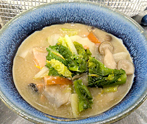

鮭のアラの粕汁
- 調理時間： 60分
- （一人当たり）
- カロリー：276kcal
- たんぱく質：23.4g
- 脂質：3.6g
- 炭水化物：31.9g
- 塩分：1.1g
＜2人分＞
- 鮭のアラ
- 100～150g
- 柚子(皮を千切り)
- 適量
- 酒かす
- 100g
- みそ
- 大さじ1位
- だし汁
- 4カップ
- ・大根
(厚さ1㎝位のイチョウ切り) - 100g
- ・里芋(皮をむいて、一口大)
- 100g
- ・しめじ
(石づきをとり、手でほぐす) - 30g
- ・ニンジン(短冊切り)
- 40g
- ・ゴボウ
(ささがきにして水にさらす) - 30g
- ・白菜(3cm幅のざく切り)
- 2～3枚
- ・菜花(5cm長さに切る)
- 2株(60g)
A
- 酒かすは小さくちぎってボウルに入れ、ぬるま湯をかぶるくらいにいれて10分以上、置いてやわらかくしておく。
（使う前にぬるま湯は捨てる） - 野菜を切る。
里芋は、皮をむいた後、塩をまぶしてぬめりをとり、サッと湯がいた後、水で洗っておく。 - 鮭のアラの下準備
鍋にたっぷりの水と塩をいれ、沸騰したら鮭のアラを少量ずついれて、サッと湯通しする。 - 鮭を取り出し流水でしっかりぬめりを洗い流す。
キッチンペーパーで水気をふきとる。 - 鍋にだし汁を入れて、鮭のアラ以外のAの材料を入れて火にかける。
沸騰したら、アクをとり、10分煮込んだらアラを入れる。 - 蓋をして、野菜がしっかりやわらかくなるまで煮込む。
水分が不足したら、水かだし汁を足す。 - 煮込んでいる間に、①の酒かすに適量取った煮汁を加えて、すり鉢やゴムベラで滑らかに潰しておく。
みそを加えて、さらに滑らかにすりつぶす。 - 煮込み終わった汁に⑦の酒かすを加えて、少し煮込む。
最後に味をみて、みそで味をととのえる。柚子の皮をちらして完成。
鮭のアラの粕汁
酒かすには、健康によいといわれる酒粕ペプチド、食物繊維、ビタミンＢ群、オリゴ糖等などの栄養素が豊富に含まれています。酒かすペプチドは、血流をよくして冷え性を改善。不溶性の食物繊維が腸の蠕動運動を促し、オリゴ糖は腸内の善玉菌を増やし整腸作用をもたらします。こんなに健康効果がある発酵食品の酒かすをもっと食卓にとりいれてはいかがでしょう。